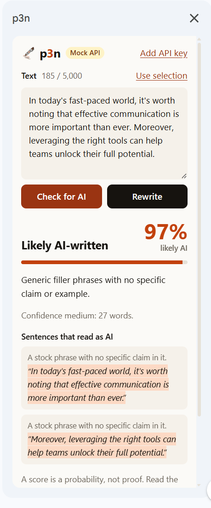
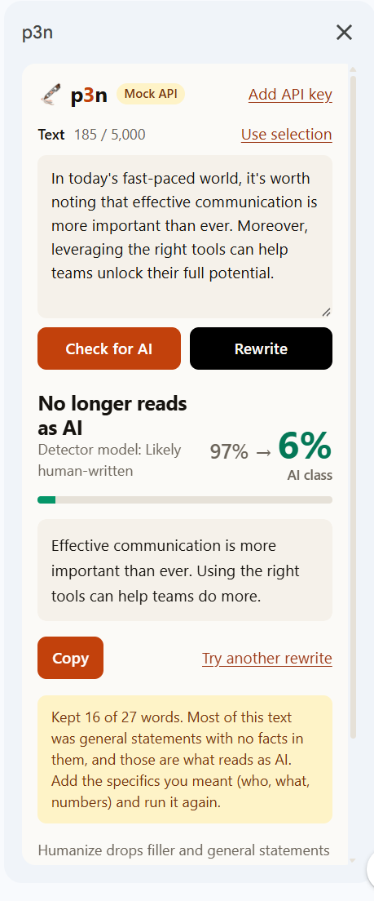

Check and rewrite AI-sounding text in Google Docs™
Select text in a document. p3n tells you whether it reads as AI-written and which sentences give it away. Or it rewrites the text and puts the new version where your selection was.


The p3n sidebar next to a document.
What it does
- Check for AI. A score, a one-line reason, and the sentences that read as AI.
- Rewrite. A version that keeps your facts and drops the filler. Replace selection puts it in place of your text with headings, lists and formatting kept, and one Ctrl+Z undoes it.
- Start it from Extensions → p3n, or paste any text into the sidebar.
Free, or with a key
You get 10 checks or rewrites an hour without an account, up to 5,000 characters each. For more, create an API key at p3n.si and paste it into the sidebar.
How it uses your Google data
The add-on asks Google for two permissions:
| Permission | Why |
|---|---|
| See and edit the document it's used in | To read the text you selected, and to put the rewrite in its place when you click Replace selection. It can't open any other document or file. |
| Show its menu and sidebar in Google Docs | For the Extensions menu items and the sidebar. |
It sends the text in the sidebar to api.p3n.si only when you click Check for AI or Rewrite. It doesn't read your name, email, contacts or Drive, keeps no history and has no analytics. The details are in the privacy policy.